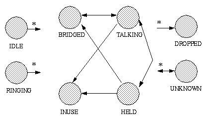

public interface CallControlTerminalConnection extends TerminalConnection
CallControlTerminalConnection interface extends the core
TerminalConnection interface with additional
features and greater detail about the TerminalConnection state. Applications
may query a TerminalConnection object using the instanceof
operator to see whether it supports this interface.
TerminalConnection interface. These states are related to the
states defined in the core package in certain, specific ways, as defined
below. Applications may obtain the
CallControlTerminalConnection state via the
getCallControlState() method defined on this interface. This
method returns one of the integer state constants defined in this interface.
Below is a description of each CallControlTerminalConnection
state in real-world terms. These real-world descriptions only serve to
provide a more intuitive understanding of what is going on. Several methods
in this specification state pre-conditions based upon the
CallControlTerminalConnection state. Some of these states are
identical to those defined in the core package.
CallControlTerminalConnection.IDLE |
This state has the same definition as in the core package. It is the initial
CallControlTerminalConnection state for all new
TerminalConnection objects. TerminalConnections typically do not stay in
this state for long, quickly transitioning to another state.
|
CallControlTerminalConnection.RINGING |
This state has the same definition as in the core package. It indicates that the associated Terminal is ringing and has an incoming telephone call. |
CallControlTerminalConnection.TALKING |
This state indicates that the Terminal is actively part of a Call, is typically "off-hook", and the party is communicating on the telephone call. |
CallControlTerminalConnection.HELD |
This state indicates that a Terminal is part of a Call, but is on hold. Other Terminals which are on the same Call and associated with the same Connection may or may not also be in this state. |
CallControlTerminalConnection.BRIDGED |
This state indicates that a Terminal is currently bridged into a Call. A Terminal may typically join a Call when it is bridged. A bridged Terminal is part of the telephone call, but not active. Typically, some hardware resource is occupied while a Terminal is bridged into a Call. |
CallControlTerminalConnection.INUSE |
This state indicates that a Terminal hardware resource is
currently in use. The terminal is not available for the Call associated
with this Terminal Connection, that is the Terminal may not join the
call. This state is similar to the
CallControlTerminalConnection.BRIDGED state except that the
Terminal may not join the Call.
|
CallControlTerminalConnection.DROPPED |
This state has the same definition as in the core package. It indicates that a particular Terminal has permanently left the Call. |
CallControlTerminalConnection.UNKNOWN |
This state has the same definition as in the core package. It indicates that the implementation is unable to determine the state of the TerminalConnection. TerminalConnections may transition into and out of this state at any time. |
TerminalConnection state transition diagram,
the CallControlTerminalConnection state must transition
according to the rules illustrated in the finite state diagram below. The
implementation must guarantee that the
CallControlTerminalConnection state abides by this transition
diagram.
The asterisk next to a state transition, as in the core package, implies a transition to/from another state as designated by the direction of the transition arrow.

TerminalConnection
states and the CallControlTerminalConnection states. If an
implementation supports the call control package, it must ensure this
relationship is properly maintained.
Since the states defined in the CallControlTerminalConnection
interface provide more detail to the states defined in the
TerminalConnection interface, each state in the
TerminalConnection interface corresponds to a state defined in
the CallControlTerminalConnection interface. Conversely, each
CallControlTerminalConnection state corresponds to exactly one
TerminalConnection state. This arrangement permits applications
to view either the core state or the call control state and still see a
consistent view.
The following table outlines the relationship between the core package TerminalConnection states and the call control package TerminalConnection states.
| If the call control package state is... | then the core package state must be... |
CallControlTerminalConnection.IDLE |
TerminalConnection.IDLE |
CallControlTerminalConnection.RINGING |
TerminalConnection.RINGING |
CallControlTerminalConnection.TALKING |
TerminalConnection.ACTIVE |
CallControlTerminalConnection.HELD |
TerminalConnection.ACTIVE |
CallControlTerminalConnection.INUSE |
TerminalConnection.PASSIVE |
CallControlTerminalConnection.BRIDGED |
TerminalConnection.PASSIVE |
CallControlTerminalConnection.DROPPED |
TerminalConnection.DROPPED |
CallControlTerminalConnection.UNKNOWN |
TerminalConnection.UNKNOWN |
CallControlTerminalConnection
interface are reported via the CallObserver.callChangedEvent()
method. The application observer object must also implement the
CallControlCallObserver interface to express interest in the
call control package events. Applications receive TerminalConnection-related
events in the call control package when the call control state changes.
Observers which are registered on a Call receive events when the
CallControlTerminalConnection state changes. Note that when the
CallControlTerminalConnection state changes, it sometimes
results in the TerminalConnection state changing (according to
the table above). In these instances, both the proper call control and core
package events are delivered to the observer.
The CallControlTerminalConnection state events defined in this
package are: CallCtlTermConnBridgedEv,
CallCtlTermConnDroppedEv, CallCtlTermConnHeldEv,
CallCtlTermConnInUseEv, CallCtlTermConnRingingEv,
CallCtlTermConnTalkingEv, and
CallCtlTermConnUnknownEv.
| Modifier and Type | Field and Description |
|---|---|
static int |
BRIDGED
The
CallControlTerminalConnection.BRIDGED state indicates
that a Terminal is currently bridged into a Call. |
static int |
DROPPED
The
CallControlTerminalConnection.DROPPED state has the same
definition as in the core package. |
static int |
HELD
The
CallControlTerminalConnection.HELD state indicates that
a Terminal is part of a Call, but is on hold. |
static int |
IDLE
The
CallControlTerminalConnection.IDLE state has the same
definition as in the core package. |
static int |
INUSE
The
CallControlTerminalConnection.INUSE state indicates that
a Terminal is part of a Call, but is not active. |
static int |
RINGING
The
CallControlTerminalConnection.RINGING state has the same
definition as in the core package. |
static int |
TALKING
The
CallControlTerminalConnection.TALKING state indicates
that a Terminal is actively part of a Call, is typically "off-hook", and the
party is communicating on the telephone call. |
static int |
UNKNOWN
The
CallControlTerminalConnection.UNKNOWN state has the same
definition as in the core package. |
ACTIVE, PASSIVE| Modifier and Type | Method and Description |
|---|---|
int |
getCallControlState()
Returns the call control state of the TerminalConnection.
|
void |
hold()
Places a TerminalConnection on hold with respect to the Call of which it
is a part.
|
void |
join()
Makes a currently bridged TerminalConnection active on a Call.
|
void |
leave()
Places a currently active TerminalConnection in a bridged state on a
Call.
|
void |
unhold()
Takes a TerminalConnection off hold with respect to the Call of which it
is a part.
|
answer, getCapabilities, getConnection, getState, getTerminal, getTerminalConnectionCapabilitiesstatic final int IDLE
CallControlTerminalConnection.IDLE state has the same
definition as in the core package. It is the initial
CallControlTerminalConnection state for all new
TerminalConnections. TerminalConnections typically do not stay in this
state for long, but quickly transition to another state.static final int RINGING
CallControlTerminalConnection.RINGING state has the same
definition as in the core package. It indicates that the associated
Terminal is ringing and has an incoming telephone call.static final int TALKING
CallControlTerminalConnection.TALKING state indicates
that a Terminal is actively part of a Call, is typically "off-hook", and the
party is communicating on the telephone call.static final int HELD
CallControlTerminalConnection.HELD state indicates that
a Terminal is part of a Call, but is on hold. Other Terminals which are
on the same Call and associated with the same Connection may or may not
also be in this state.static final int BRIDGED
CallControlTerminalConnection.BRIDGED state indicates
that a Terminal is currently bridged into a Call. A Terminal may
typically join a telephone call when it is bridged. A bridged Terminal is
part of the telephone call, but not active. Typically, some hardware
resource is occupied while a Terminal is bridged into a Call.static final int INUSE
CallControlTerminalConnection.INUSE state indicates that
a Terminal is part of a Call, but is not active. It may not Call, however
the resource on the Terminal is currently in use. This state is similar
to the CallControlTerminalConnection.BRIDGED state however,
the Terminal may not join the Call.static final int DROPPED
CallControlTerminalConnection.DROPPED state has the same
definition as in the core package. It indicates that a particular
Terminal has permanently left the Call.static final int UNKNOWN
CallControlTerminalConnection.UNKNOWN state has the same
definition as in the core package. It indicates that the implementation
is unable to determine the state of the TerminalConnection.
TerminalConnections may transition into and out of this state at any time.int getCallControlState()
void hold() throws InvalidStateException, MethodNotSupportedException, PrivilegeViolationException, ResourceUnavailableException
CallControlTerminalConnection.TALKING state. This method
returns when the TerminalConnection has moved to the
CallControlTerminalConnection.HELD state, or until an error
occurs and an exception is thrown.
Pre-conditions:
InvalidStateException - Either the Provider is not "in service"
or the TerminalConnection is not "talking".MethodNotSupportedException - This method is not supported by
the implementation.PrivilegeViolationException - The application does not have
the proper authority to invoke this method.ResourceUnavailableException - An internal resource necessary
for the successful invocation of this method is not available.TsapiPlatformException - Implementation specific exception thrown if
the API call fails.CallCtlTermConnHeldEvvoid unhold()
throws InvalidStateException,
MethodNotSupportedException,
PrivilegeViolationException,
ResourceUnavailableException
CallControlTerminalConnection.HELD state. This method returns
successfully when the TerminalConnection moves into the
CallControlTerminalConnection.TALKING state or until an error
occurs and an exception is thrown.
Pre-conditions:
InvalidStateException - Either the Provider is not "in service"
or the TerminalConnection is not "held".MethodNotSupportedException - This method is not supported by
the implementation.PrivilegeViolationException - The application does not have
the proper authority to invoke this method.ResourceUnavailableException - An internal resource necessary
for the successful invocation of this method is not available.TsapiPlatformException - Implementation specific exception thrown if
the API call fails.CallCtlTermConnTalkingEvvoid join() throws InvalidStateException, MethodNotSupportedException, PrivilegeViolationException, ResourceUnavailableException
CallControlTerminalConnection.BRIDGED state. This method
returns which the TerminalConnection has moved to the
CallControlTerminalConnection.TALKING state or until an error
occurs and an exception is thrown.
Pre-conditions:
InvalidStateException - Either the Provider is not "in service"
or the TerminalConnection is not "bridged".MethodNotSupportedException - This method is not supported by
the implementation.PrivilegeViolationException - The application does not have
the proper authority to invoke this method.ResourceUnavailableException - An internal resource necessary
for the successful invocation of this method is not available.TsapiPlatformException - Implementation specific exception thrown if
the API call fails.TermConnActiveEv,
CallCtlTermConnTalkingEvvoid leave()
throws InvalidStateException,
MethodNotSupportedException,
PrivilegeViolationException,
ResourceUnavailableException
CallControlTerminalConnection.TALKING state.
There are two possible outcomes of this method depending upon the number
of remaining, active TerminalConnections on the Call. If there are other
active TerminalConnections, then this TerminalConnection moves into the
CallControlTerminalConnection.BRIDGED state and this method
returns. If there are no other active TerminalConnections, then this
TerminalConnection moves into the
CallControlTerminalConnection.DROPPED state. Its associated
Connection moves into the CallControlConnection.DISCONNECTED
state, i.e. the entire endpoint leaves the telephone call. This method
waits until one of these two outcomes occurs or until an error occurs and
an exception is thrown.
Pre-conditions:
InvalidStateException - Either the Provider is not "in service"
or the TerminalConnection is not "talking".MethodNotSupportedException - This method is not supported by
the implementation.PrivilegeViolationException - The application does not have
the proper authority to invoke this method.ResourceUnavailableException - An internal resource necessary
for the successful invocation of this method is not available.TermConnPassiveEv,
TermConnDroppedEv,
ConnDisconnectedEv,
CallCtlTermConnBridgedEv,
CallCtlTermConnDroppedEv,
CallCtlConnDisconnectedEvCopyright © 2009 Avaya All Rights Reserved.